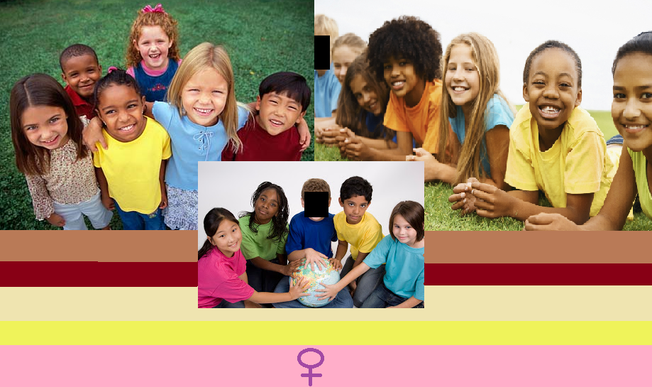
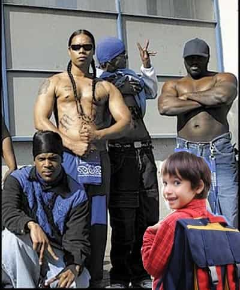
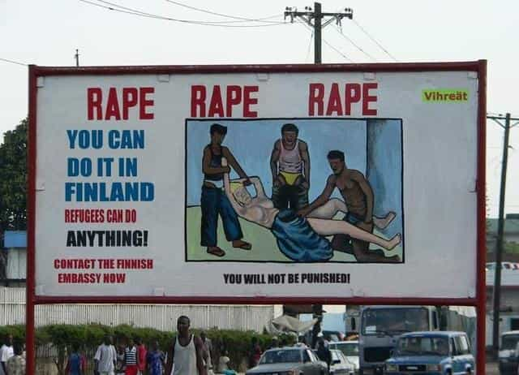
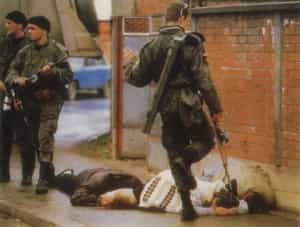

< < < Back
My First Multicultural Experience – Return Of Kings
John Lennon was a great, great, GREAT man. He truly was the voice of the baby boomers, unarguably the greatest generation to have ever lived. His calls for world peace rang out from the windows of the high class building he lived in, echoing messages of hope across a gentrified Manhattan which at the time had an evil majority population of 70% white people. Lennon was such a great soul that he recognized the importance of ethnic cross breeding, choosing as his life mate Yoko Ono, a Japanese women from a high class family.
Ono’s family had spent their lives living in the lands of evil white men, having sent Yoko to a Christian school to be tutored by more evil white men – so she knew all about their evil by the time she moved to white cities and spent her time hanging out with white people. Evil, evil white people.
John Lennon and his ethnically safe soul mate Yoko Ono
And yes, Lennon had made mistakes in the past – perhaps biggest of all having married a woman from his own cultural and societal background, a white woman, and having fathered an evil white BOY with her. Of course Yoko Ono, who by the grace of not being Western or white was mentally and morally superior by default, quickly put that evil white boy in his place by helping Lennon cut off contact with him, making sure their inheritance was denied and squandered so they couldn’t hatch evil white man plans against the world.
Truly, Lennon and Ono were shining beacons of what a multicultural utopia could be. Just listen to the greatest song ever written.
Stirring is it not? Dig those lyrics brah…
Imagine there’s no countries, It isn’t hard to do.
We are so lucky. We truly are. John never got the chance to see how our evil nation states – created to protect and enrich JUST the lives of the people who lived within their borders – are morphing into borderless squares of politically correct corporate fiefdoms.
Imagine no possessions, I wonder if you can, No need for greed or hunger, A brotherhood of man.
Wow. The world John envisions is so beautiful isn’t it? A world where no one feels hunger, no one feels the need to generate wealth, where we’ll all live in houses whatever size we want built by all of us just to see the smiles on our fellow humans. I mean, imagine a world where, like, we needn’t have to breathe so we could live in the water with whales and dolphins. Imagine a world where beautiful people had to pair up with ugly people so that in the end everyone just has plain and mediocre genes. Imagine a world with nothing that makes us feel any sort of emotion what so ever!
Imagine all the people, Sharing all the world…
John and you other baby boomers, you may have been a bunch of dreamers, but this dream of yours is finally coming true. It’s taken far, far too long but we’re almost there brother. We’re almost there. Thank you for leading we younger generations to it.
I was listening to the above video not too long ago, and it made me reflect on the joys of my own experiences in growing up in a small multiculturally diverse Canadian city. Multiculturalism has been getting a lot of bad rep lately and I honestly find this mind boggling.

I think most of the people saying how multiculturalism destroys peace within a nation or takes opportunity away from those whose parents, grandparents and greater ancestors who built the country are simply haters and bigots. I don’t think they’ve ever really lived in or experienced the joys of being in a multicultural community.
Well folks, old Billy Chubbs has. I spent my childhood growing up in a city that is a shining example of the multicultural utopia currently being created around us. Unfortunately my parents moved me away during 8th grade, so I never got to fully mature in that glorious rainbow of skin colour and differing religions. I think I am worse off for that lack of experience. I can, however, recount some lovely incidents I had during the golden age of my life that I spent within that multicultural Nirvana.
Billy Chubbs first experience with a different culture
There I was, fresh faced and precocious, ready for another day of 1st grade. My colouring books and lunch safely tucked away in my favourite Power Rangers backpack. After a kiss and hug from my mommy I was out the door. The day was bright and sunny. The leaves were beginning to change into their fall colours but for the end of September the weather was exceptionally warm. School was seven blocks away and I took my time meandering to it, watching squirrels gather their nuts, looking at the pretty flower gardens carefully kept in front of the middle class houses. I noticed a lot of them down this street had For Sale signs up but I thought nothing of it – in fact, I enjoyed those signs quite a bit that day, giving each one I passed a satisfying bonk with a stick.
Turning south two blocks away from the school I had my first multicultural experience.

A bit of background on my city first. For most of the 20th century my city was predominantly full of evil white men. It was truly a hell hole; no, there wasn’t much in the way of crime or uncomfortable experiences, but what we had in safety we lost in soul. The city council, baby boomer dreamers that they are, decided to do something about this. The 90s and early 00s were a rough period for the innocent parts of the world. Wars and genocides in African and the Middle East – caused by us evil white men of course – were ravaging the disenfranchised 2nd and 3rd worlds.
Realizing something needed to be done to help their fellow man, and to give our city some much needed culture, our council held several closed door meetings in their suburban McMansions and agreed to accept a lot of refugees from these culturally superior countries.
Our first big slice of multicultural utopia arrived in 1999 in the form of several hundred Somalians. The apartments right by the school had been rented out to them. I had walked this route last year with no incidents and boy howdy, was that ever boring! As a young man what I really craved a bit of excitement on my way to school, and a nice Somalian man provided it. He was sitting on the corner, swaying and smelling of mouth wash. That explained his big toothy white smile when he saw me walking by. He hopped right up and began stumbling over.
Now two weird things happened, which the doctors at the hospital later told me was probably just euphoria from me realizing I was about to experience a non-Western – and therefore superior – culture.
My body went numb and I froze. A voice inside my head said;
This is your brain Billy. I’m releasing Dopamine; it will make you numb.
To which I thought back; Are you trying to kill me?
No Billy, I’m making you not care.
And behind the nice man’s shoulder, there was a bright white light and suddenly an Angel appeared. Apparently, much like our encounter, at the time no one seemed to notice it. The Angel had a sad face and was stretching out his hand, mouthing; You’re going home my child.
Of course, being white AND a man, I knew the Angel did not have my best interests at heart and therefore could not be trusted. Besides, I wasn’t going home! I was going to school! I ignored the silly Angel and stood there waiting to see what the nice Somali man wanted.
He began by trying to teach me his language, and as was his culture’s way it involved yelling at me and pushing me around. As an evil white boy, I had some reservations about standing there absorbing the Somalian culture. For a long time afterward I thought I didn’t run because I was frozen from sheer fear and terror but recently some feminists explained how it was my duty to welcome all cultures, and that my refusal to run was my mind recognizing that simple fact of nature. They couldn’t explain why the Somali then took my back pack off, held it between us and unzipped it to shake all my books and lunch out onto the sidewalk. But those feminists assured me that, as an evil white man, it was my fault.
When I asked what he was doing with it he finally communicated with me in my own evil and inferior language.
“MONEY?!”
Oh! I thought, He is just a hungry hobo. John Lennon says nobody should be hungry, so I reached into my pocket and took out my two loonies for milk money (one dollar coins for the 98% of you reading this who aren’t Canadians) and happily held them out to the man.
The nice man then gave me a Somalian goodbye by kicking me in the stomach with his engineer boot before prying open my hand and taking my two dollars. I tried not to cry as the wind was knocked out of me. I shamefully admit I had a brief thought about why a grown man had struck me, a small child, and if he was white I suppose I would have thought the man a criminal. He was, however, a different colour then me and since I was the white male it was simply my duty to accept his culture.
The teacher made a big deal out of my being late and then of the massive red welt which turned into a 3 inch bruise on my stomach. Then my parents and the police made a big deal out of trying to get me to identify the attackers. When I did they stopped making such a big deal, recognizing that I was not the victim of a crime but just experiencing multiculturalism. They showed me a big binder with a lot of faces inside, asking me if I recognized any of them. There were lots of evil white men inside, a few disenfranchised brown Native Americans and black men but none matched the nice Somali that taught me about his ways. The incident was soon dropped.
I had many more enlightening multicultural encounters after that, the most shameful of which occurred in grade 6 when me and my friend committed a hate crime by attacking some Sikh kids that had earlier cornered my friend’s sister and tried to make her lift her skirt up for them. That was their culture, and we evil white boys should have known better by then. I felt absolutely no revulsion or hatred for the older men in my city and society in general as my Principal and Vice Principal, both evil white men who had fortunately embraced multiculturalism, forced my friend and I to shake hands with the Sikh boys we had attacked for no good reason.

It’s not a crime, it’s their CULTURE.
My friend’s family could not get over their evil whiteness and moved shortly thereafter. My own mother and father tried their best to avoid giving into their hatred, even as in my weaker moments I admit I begged them to leave as well. When our evil white neighbour got hit with a brick in the head walking to his car after work, I guess my mom and dad finally realized that multiculturalism can affect the morally superior baby boomers too, no matter how much they tried to make our city a Multicultural Utopia.
So, the cowards we are, the Chubbs shamefully retreated to a smaller town. The population was almost 90% white and I spent my boring high school years soullessly safe. My grades skyrocketed since my classes were full of calm, boring evil white people who didn’t scream at each other in different languages or bring pellet guns into class. To make up for my shameful ways I attended university, giving tens of thousands of dollars and three years of my life to further the feminist indoctrination institution.
And today, now that my country is thoroughly multicultural, I don’t have to worry about finding any more evil white communities! Chasing careers in a crowded job market saturated with affirmative action laws and immigrant driven wage undercutting, I get to relive my childhood every single day! I just hope those evil white people living in suburbs, gentrified neighbourhoods and gated communities get to experience the sheer joys of multiculturalism one day. After all, they’re the ones who instituted it in the first place and have spent so much time spouting how good it is for everyone. I know they’re afraid of affecting the rest of society with their evil whiteness, but it’s okay. Most of us Millennials and Generation Xers have paved the way for you baby boomers; we have met multiculturalism and it is us!
So come on folks. Erase those borders, open up those gates and for god sakes build a project or two in mostly white neighbourhoods. Multiculturalism ain’t so bad, and it’s-a-comin’ anyways – don’t you want to be ahead of the curve?
Maybe we just need some more examples; why don’t you, gentle reader, share some of your experiences with multicultural utopianism below?

That’s how they made me, Facist baby, Utopia, Utopia…
Article Facts
Number of times evil, white, multicultural, utopia said: 89 (Jesus Christ)
Amount of Milk Money taken by Multiculturalism : 645 CAD
Number of Canadian Boomers for Multiculturalism : 9,000,000
Number of Canadian Boomers Living In Predominantly White Areas : 9,000,000
Number of Obligatory Feminism Knocks : 3
Author’s Scale Of Evil Male Whiteness : Worse then Hitler
Read More: Life At The Bottom: A Law Graduate’s Experience


{kind=link}
{kind=link}